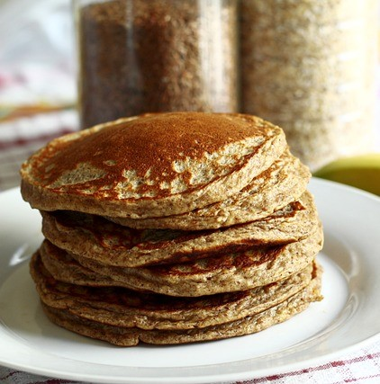

Panqueca
Ingredientes
- 1/2 xic de leite
- 1 ovo
- 1 c. sopa de acúcar
- 1 xícara de farinha de trigo
- 1 c. sobremesa de fermento químico
Modo de Preparo
- Misture o leite, o ovo, e o açúcar em uma tigela.
- Adicione a farinha de trigo, misture e adicione logo em seguida o fermento químico
- Leve uma frigideira antiaderente ao fogo médio. Quando aquecer, coloque uma concha da massa no centro da frigideira, abaixe o fogo e deixe por 2 minutos até a lateral da panqueca começar a firmar e formarem bolhas no centro da massa.
- Com uma espátula, vire a panqueca e deixe por mais 1 minuto para dourar o outro lado por igual. Transfira para um prato e repita com o restante da massa. Sirva as panquecas ainda mornas com, manteiga, geleias, frutas, mel ou maple.